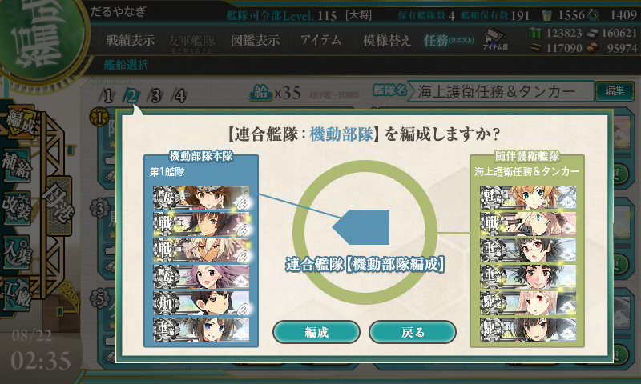

艦これ夏イベント2015：E7 FS方面海域
公開日：
掘りを諦めてでも、甲種勲章は3つほしかった。
初期編成
所謂「軽空ルート」で、初手以外をボスまで固定。
- 第一艦隊：戦艦×2＋重巡×1＋正空×1＋軽空×2
- 摩耶：主砲×2＋機銃＋艦隊司令部施設（ラストは偵察機に換装）
- 大和 or 長門：主砲×2＋徹甲弾＋偵察機
- 武蔵 or 扶桑：主砲×2＋徹甲弾＋偵察機
- 加賀：制空値300ちょっとに調整して適当に艦攻＋艦爆＋彩雲を積む
- 千歳 or 千代田
- 隼鷹
- 第二艦隊：高戦×1＋重巡×2＋軽巡×1＋駆逐×2
- 阿武隈：甲標的＋魚雷×2
- 妙高：主砲×2＋夜偵＋照明弾 → 主砲×3＋夜偵
- プリンツ・オイゲン：主砲×3、偵察機
- 雪風：魚雷×3
- ［防空担当］秋月 or 夕立：主砲×2（高射装置付き）＋対空電探（秋月は探照灯 or 照明弾）
- 榛名：主砲×2＋夜偵＋大型探照灯
「阿武隈」を旗艦にするともったいない（旗艦にはボーナスがつく）ので後ろに下げたが、大破しまくったので、穴を空けてダメコンを装備（のちに駆逐艦には穴を空けた）。
「ビスマルク」を西部方面に使ってしまったので、代わりに「榛名」を投入。最初は徹甲弾を装備させていたが、途中から道中の昼砲撃戦の安定と、ボス夜戦のデコイ役と割り切って順番を下げ、探照灯を装備させた。これはなかなかイケたのではないかと思う。
戦闘経過

2:00 ごろから攻略開始（スクショの編成は一番最初、小手調べに出した艦隊だけど、M マスで大破撤退した）。
「あきつ丸」旗艦で X5/Y3 を削る（計10戦ほど、詳細は省略）。一度 C マスへながされ、輸送艦三隻を狩るハメに。個人的には輸送艦を狩った数がトリガーなんじゃないかと思うんだけど（計11隻）。
4:00 ごろから削り開始。
- E → G → J → M → Z（114/255）：決戦支援なし → つける
- E（第二艦隊旗艦「阿武隈」大破） → G → J（「プリンツ・オイゲン」大破）→ 撤退
- E（「秋月」大破） → 撤退
- B → 撤退
- E（第二艦隊旗艦「秋月」大破）→ G → J（「雪風」大破）→ 撤退
- B → 撤退
- E（「プリンツ・オイゲン」大破）→ 撤退
- E → G → J（旗艦「秋月」大破） → M（「阿武隈」護衛退避） → Z（114/255）：「雪風」を「夕立」にスイッチ
- E → G → J（「夕立」「阿武隈」、第一艦隊旗艦「摩耶」大破）→ 撤退：大和型を「扶桑」「陸奥」にスイッチ
- E → G → J（「夕立」大破）→ 撤退：「夕立」を「雪風」、軽空×3 → 正空×1＋軽空×2にスイッチ
- B → 撤退
- E → G → J → L（「陸奥」大破）→ 撤退：「秋月」を「夕立」（対空カットイン仕様）にスイッチ
- E → G → J（「加賀」護衛退避）→ M（「榛名」護衛退避）→ Z（111/255）：圧倒的不利な状況で過去最高の削り……「阿武隈」さん！！
- B → X（「妙高」「雪風」「夕立」大破）→ 撤退 （X6Y3）
- E → G → J（「榛名」「千歳」大破）→ 撤退：支援出し忘れ（白目
- E → G → J → L → Z（54/255）
- E（「夕立」大破）→ G → J → M（「榛名」護衛退避）→ Z（130/255）：「夕立」がボス戦でダメコン消費。「雪風」が今だ夜戦で一発の魚雷も放っていない（白目 護衛退避につかった「雪風」を「島風」にスイッチ
- E（「夕立」大破）→ G → J → L（「阿武隈」大破、「加賀」護衛退避）→ Z（101/255）：「阿武隈」がボス戦でダメコン消費。護衛退避につかった「島風」を「綾波」にスイッチ
- E → G → J → L → Z（43/255）：初回以来の大破なしでのボス到達？
- B → 撤退：「間宮」「伊良湖」使うとこれだよ！！（道中支援のキラ付けだけだけど） 時刻は10:30になった。シャワー浴びて息抜き

- E → G → J → L → Z（2/255）：「妙高」さんのカットインで100超え、そして「雪風」のカットイン……！ は 62 ダメージ。惜しいいいい！
- B → 撤退：殴りてぇ……。重巡の装備を夜戦カットインに見直す
- E → G → J → L（「隼鷹」護衛退避）→ Z（159/255）：「プリンツ・オイゲン」のカットインがカスダメージ、「妙高」が攻撃前に大破……
- E（「雪風」大破）→ 撤退：イイ感じに削っても、旗艦の重巡ネ級 elite を残すと雷撃が痛い……
- E → G → J → M → Z（112/255）：必殺の「妙高」カットインは護衛に呑みこまれた……
- E → G → J（「夕立」大破）→ M → Z（83/255）：ボス戦で「夕立」の女神が発動……（間違った！）
- E → G → J → M → Z（0/255）：初の撃破！ ドロップは「筑摩」ぇ……。以後、ラストアタック。艦隊司令部施設を外す。戦闘糧食やダメコンを装備。時刻は13:00ごろ。
- E → G → J → M（「妙高」「夕立」大破）→ 撤退
- E → G → J → M（「千代田」大破）→ 撤退：打ち漏らした空母で事故る……
- E → G → J → M → Z（143/255）：正規空母×3（加賀、翔鶴、瑞鶴）の構成にしてみる
- E（「阿武隈」大破） → 撤退
- B → 撤退
- E → G → J（「翔鶴」「夕立」大破） → 撤退：15:30、力尽きて2時間ほど仮眠、その後夕食。7:30 から攻略開始
- B → 撤退
- E → G → J（「瑞鶴」「夕立」大破） → 撤退
- E → G → J → M → Z（93/255）カットインが足りないので対空カットインの「夕立」を諦めて「綾波」を追加（ほんとうは「時雨」にしたかったけど、使ってしまっていた）。旗艦におけば、割とカットインしてくれるはず
- E → G → J → M → Z（0/255）：「阿武隈」が応急修理を利用（女神にしておけばよかった！）。でも、撃破！
全37戦、15回ボス到達、S 勝利1回（ボス撃破2回）。
支援は道中・決戦ともに全力で。キラ付けはクソめんどくさくて大嫌いなのでしないが、最後だけ第二艦隊と道中支援だけアイテム（間宮＋伊良湖）で戦意高揚状態にしておいた（伊良湖はまだ余ってるけど、間宮は残り1つになった。5個ぐらい使った模様）。
ボス撃破
「阿武隈」大破、「プリンツ・オイゲン」中破の状態でボス到達。「大和」がなんかオニギリくってた。戦闘糧食って個艦にしか効果ないのかな？
支援艦隊到着。編成は 駆逐×2（主砲＋電探）＋長門型×2（主砲＋電探）＋正規空母×2（彗星＋電探）。
敵駆逐艦×2を一掃。できれば第二艦隊の昼戦で姫だけにしておきたいが……
丁字有利を引くが、「阿武隈」が轟沈。ダメコンで助けてもらう。「プリンツ・オイゲン」も大破。
第一艦隊の昼戦は敵旗艦に集中、重巡の耐久が 7 だけ残って嫌な感じに。
ただ、「大和」「武蔵」のカットイン砲撃でかなり削れたので、一発夜戦のカットインが入れば終わり。
ここで不思議な踊りをして幸運を願う。
すると、「綾波」のカットイン雷撃が発動して……
撃破（20:30）。ちなみに、「妙高」さんが不発だったので、残りは打ち漏らした。所要時間、18時間ほど。
最終編成は以下の通り。
- 第一艦隊：戦艦×2＋重巡×1＋正空×3
- 大和 or 長門：主砲×2＋徹甲弾＋偵察機
- 武蔵 or 扶桑：主砲×2＋徹甲弾＋偵察機
- 摩耶：主砲×2＋機銃＋偵察機（旗艦ボーナスを戦艦に譲る）
- 加賀：制空値300ちょっとに調整して適当に艦攻＋艦爆＋彩雲を積む
- 翔鶴
- 瑞鶴
- 第二艦隊：高戦×1＋重巡×2＋軽巡×1＋駆逐×2
- 綾波：魚雷×3
- 妙高：主砲×3＋夜偵
- プリンツ・オイゲン：主砲×3、偵察機
- 雪風：魚雷×3
- 阿武隈：甲標的＋魚雷×2
- 榛名：主砲×2＋夜偵＋大型探照灯
第一艦隊は正規空母を増やして打撃力UP。さいわいルート逸れはなかった。
S 勝利をとれる気がしなかったので、第二艦隊はカットインで旗艦を狙う戦略にした（防空担当＋連撃の「夕立」は魚雷カットイン装備の「綾波」にスイッチ）。これがたまたまうまくいった感じ。
めぼしいドロップは、M マスでの「雪風」のみ。たぶんもう掘れないと思うので、今回はレア艦はあきらめた。
資材
燃料41,000、弾薬43,000、鋼材25,000、ボーキサイト9,000。高速修復剤160個ほど消費。思ったよりは少なくて済んだ（削りで大和型をひっこめたからかな？）。これでもまだ運がよかったほうかなと思う。
おまけ
攻略中に「夕立」とケッコン。